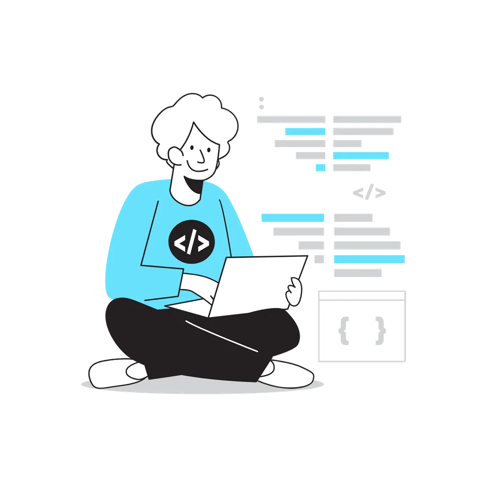

Webseite
Informiert Ihre Besucher.
- Zeigt Inhalte wie Leistungen, Öffnungszeiten oder Kontaktdaten
- Alle Besucher sehen dieselben Inhalte
- Besucher lesen, klicken und rufen an oder schreiben eine E-Mail
- Beispiel: Ihre Firmenvisitenkarte im Internet
Rautenberg Software Berlin
Maßgeschneiderte Programme, die Ihre Abläufe vereinfachen.
Rautenberg Software ist eine Einzelunternehmung aus Berlin. Ich unterstütze kleine und mittelständische Unternehmen bei der Digitalisierung und Automatisierung ihrer Geschäftsprozesse. Dazu entwickle ich maßgeschneiderte Web-Anwendungen, die auf den jeweiligen Ablauf des Unternehmens zugeschnitten sind und Routinearbeit automatisch erledigen, wo es sinnvoll ist auch mit KI. Von der ersten Idee über die Entwicklung bis hin zum Betrieb und der Weiterentwicklung. Als Einzelunternehmer gibt es keine Umwege in der Kommunikation: Sie sprechen direkt mit der Person, die Ihr Projekt entwickelt und umsetzt. Mehr über mich und meinen Werdegang

Sie haben eine digitale Baustelle? Ich helfe gerne.
Ich erstelle Ihnen Software, mit der Sie zufrieden sind. Genau nach Ihren Vorstellungen.
Unterschied
Informiert Ihre Besucher.
Erledigt Arbeit für Sie und Ihre Kunden.
Probieren Sie es aus: Tippen Sie in eine der beiden Karten.
Beides läuft im Browser, ohne Installation. Die Grenze ist fließend: Eine Webseite kann einzelne Funktionen einer Web-Anwendung enthalten, etwa einen Rechner oder ein Buchungsformular.
Bringen Sie die Pyramide zum Einstürzen!
Ziehen Sie die Kugel nach hinten und lassen Sie los.
Leistungen
Sie möchten eine Webseite, die mehr kann als einfach nur hübsch auszusehen? Sie brauchen eine Berechnung, wie z. B. einen Angebotsrechner? Sie möchten eine Webseite mit einer Datenbankanbindung, um Vorgänge zu synchronisieren? Sie möchten wiederkehrende Aufgaben automatisieren, auf Wunsch auch mit KI? Ich entwickle Ihnen gerne eine Web-Anwendung, die genau zu Ihrem Betrieb passt.
Mehr zu Web-AnwendungenSie haben eine Idee für eine Software, aber sie ist noch nicht greifbar? In einem gemeinsamen Workshop setzen wir uns zusammen und finden heraus, was Ihr Unternehmen wirklich braucht. So wird aus einem vagen Gedanken ein greifbares Ziel, ganz ohne Fachchinesisch. Ich helfe Ihnen, Ihre Wünsche zu sortieren und daraus ein klares Lastenheft zu machen. Damit können Sie die Umsetzung bei mir oder bei jedem anderen Anbieter anfragen.
Mehr zum LastenheftSie haben Software, die regelmäßig die Aufmerksamkeit eines Informatikers benötigt? Sie möchten eine Web-Anwendung betreiben und wissen nicht, wie? Ich übernehme gerne die Wartung und den Betrieb Ihrer Software, damit alles rund läuft und Sie sich keine Sorgen machen müssen. Gute Nachricht: Viele Web-Anwendungen lassen sich einfach und kostengünstig auf einem Server in Deutschland betreiben. So bleiben Ihre Daten im Land und Sie sind auf der sicheren Seite beim Datenschutz.
Mehr zu Wartung & HostingIhr Weg zum Erstgespräch
Schritt 1 Sie sind hier
Sie lesen gerade, was ich anbiete. Vielleicht wissen Sie schon genau, was Sie brauchen, vielleicht auch noch nicht. Beides ist ein guter Anfang.
Schritt 2
Ein paar Sätze zu Ihrem Vorhaben reichen. Per E-Mail oder WhatsApp, wie es Ihnen lieber ist.
Telefon & WhatsApp: +49 176 87645326
Schritt 3
Sie sprechen direkt mit der Person, die Ihr Projekt später entwickelt. Gemeinsam vereinbaren wir einen Termin.
Schritt 4
Ich höre mir Ihre Idee an, und wir schauen gemeinsam, welche Lösung sinnvoll ist. Kostenlos und unverbindlich.